This page is currently a work in progress.
| Last updated: Exalt Version 5.12.0.0 (June 2025) |
|---|
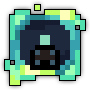 Teleportation Disabled Teleportation DisabledLimit of 25 player(s)  Music: Waltz of Eternity Music: Waltz of Eternity
|
| Dust Drops | ||
|---|---|---|
| 36-43 |
43-49 |
42-50 |
The Spectral Penitentiary is an endgame dungeon and one of the Exaltation dungeons, offering an Attack boost. It shares thematic and mechanical similarities with the Haunted Cemetery, appearing to be a penitentiary for souls that have defied Skuld, although it is not as similar to that dungeon as prior “hard version” dungeons such as Deadwater Docks are to their counterparts.
The dungeon is the source of 13 different UTs, 9 directly and 4 that are upgraded versions of Haunted Cemetery UTs crafted in the Forge using the Vial of Soul Extract, Plague Doctor Priest Set Shard, Alchemist Assassin Set Shard and Spellbound Soulthief Set Shard.
The portal to the Spectral Penitentiary is guaranteed to drop from both the Spectral Jailer and the Skeletal Centipede Encounters. The Spectral Jailer uncommonly spawns in all veteran biomes in the Realm, while the Skeletal Centipede can spawn in the Sanguine Forest.
This dungeon must be completed to earn ‘Travel of the Decade‘, ‘King of the Mountains‘, ‘Hero of the Nexus’ and ‘Realm of the Mad God’ fame bonuses.
“While Skuld’s magic could easily manipulate the souls of beings across the realm, the emergence of powerful new forces has threatened to alter the natural order of death.
In order to address this unprecedented new danger, Skuld declared an order to reopen the very dimension that had locked away her past.”
- Release description
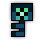The Spectral Penitentiary Key is available in the Nexus for 200  .
.
The Spectral Penitentiary Guide is currently a work in progress.
The Spectral Penitentiary is a multi-part dungeon that consists of four “branches”, each with their own objectives that must be completed to face that branch’s overseer miniboss and complete it. The enemies and terrain differ between branches, but a common theme is scattered switches that must be destroyed to gradually unlock parts of the area as players try to complete all the objectives. Each branch has a starting room that introduces players to the objective, before sending them to the branch proper.
At the start of the dungeon, Soulwarden Murcian will appear and introduce the players to the dungeon, then direct them to one of the four branches at random when prompted by typing “Ready” in the chat (similar to the Haunted Cemetery), upon which a teleporter appears to send them to the branch. Once the overseer is defeated, a teleporter back to the main room will activate, and Murcian will direct players to the second branch, also chosen at random from the remaining three. Once both branches are cleared, players can teleport back to the main room, which will gain a teleporter to Murcian’s boss room.
If a branch is cleared fast enough, the overseer of that branch will be considered to be in Hard Mode, where they gain +50% HP and slightly more dangerous attacks, have their Stat Potion drops replaced by Greater Stat Potions, and gain increased UT drop rates. If both branches are cleared quickly, then Murcian himself will also be in Hard Mode with the same changes.
A large, plain square pavilion with withered potted vegetation scattered throughout and four paths presumably leading to the different branches. Murcian will appear in the very center, while the teleporter(s) will appear at their branch’s respective path.
An area themed after an administrative office, featuring red carpets adorning a floor of wooden planks. The objective of the branch is to destroy offensive Administration Turrets scattered throughout the area. A total of 12 turrets must be destroyed to unlock the boss room: 2 in the starting room, and 10 in the actual zone.
Overseer Oculon is the overseer of this branch.
An area themed after a prison, made of monochrome grey brick and metal cells for holding prisoners. The objective of the branch is to free prisoners by defeating Shackled Souls being held in the cells. Most of these prisoners will be held behind impassible bars that must be unlocked by destroying special red levers scattered throughout the area. A total of 17 prisoners must be freed to unlock the boss room: 2 in the starting room, and 15 in the actual zone.
Griefkeeper Zole is the overseer of this branch.
An area themed after a graveyard, consisting of dark green grass and mud interspersed with buildings of grey stone and iron chains. The objective of the branch is to dig up graves by destroying Garden Gravestones scattered throughout the whole area, with different graves contributing different amounts of points towards the counter.
Groundskeeper Gretch is the overseer of this branch.
An area themed after a laboratory, primarily comprised of dark wood and cobblestones with green pipes running through. The objective of the branch is to deactivate Skull Pylons by attacking Slime Dispensers holding small colored slimes that will start following players around. Bringing a slime to a pylon that matches its color will make it absorb the slime and deactivate. A total of 9 pylons must be disabled to unlock the boss room: 1 in the starting room, and 8 in the actual zone.
Doctor Lobotomik is the overseer of this branch.
A plain, circular room made of nondescript grey stone, where Soulwarden Murcian awaits as the final boss. In later phases, the room will shrink slightly to limit player space as darkness consumes the edges of the arena. In Murcian’s final phase, the whole room is engulfed in darkness (although the size stays the same), which returns to normal if Murcian is defeated.
| 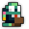 Defiled Filer |
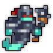 Fiendish Bailiff |
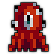 Omnipresent Superintendent |
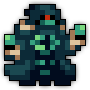 Probation Wraith |
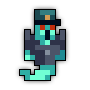 Resurrectional Officer |
| 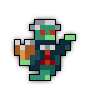 Reverend Revenant |
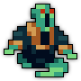 Screaming Dean |
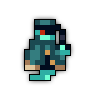 Twisted Pistolwisp |
Wandering Spectatre |
| 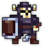 Elite Skeletal Guard |
Head of Security |
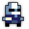 Shackled Shanker |
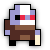 Shackled Siphoner |
Shackled Slugger |
| 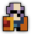 Skeletal Shieldbearer |
Skeletal Silencer |
Skeletal Taskmaster |
| 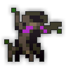 Blighted Bark |
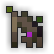 Blighted Twiglet |
Foul Flower |
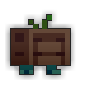 Possessed Planter |
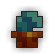 Potted Phant |
| 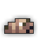 Rebirth Worm |
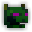 Shunned Shrubbery |
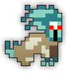 Wandering Wailer |
| 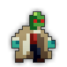 Dead Medic |
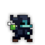 Decrepit Alchemist |
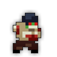 Detest Subject |
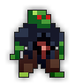 Doomed Consumer |
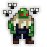 Infested Pestilent |
| 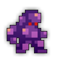 Noxious Walker |
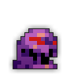 Putrid Goop |
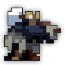 Wretched Executioner |
All Stat Potion drops are replaced by Greater Stat Potions if a boss is defeated on Hard Mode.
TBA
It was first teased on July 25th, 2023 in the Realm Lore Discord server where Marshmalla, the developer of the dungeon, posted a cryptic image titled SPOILER_UpcomingDungeon.png.
It was officially announced during Halloween 2023 when Marshmalla published its teaser video and revealed the dungeon’s name. The teaser shows Skuld allocating souls to Malphas or Septavius when they are interrupted by the Crystal Prisoner. She begins to pull souls in the Void before being interrupted by Skuld trying to restrain her. When that doesn’t work, likely due to the power of the Void Entity, Skuld banishes her soul to the Spectral Penitentiary, stating that she knows “HE” (Murcian) won’t let it leave. To hide the fact that she cannot control all souls from Oryx, Skuld gets rid of “the body” by replacing the soul with a Prismimic and allowing it to leave the cemetery, explaining the boss’ connection to crystal and ability to make clones. She also orders her minions to “imprison any suspicious or threating characters” in the penitentiary, foreshadowing its release one year later.
In August 12th, 2024, the official trailer was published. Video is available here.
According to an announcement from Marshmalla in the Realm Lore Discord server on November 25th, 2024, development on the dungeon’s “Lore Route” was postponed indefinitely due to a lack of motivation. The multiple rare NPC’s that can be found throughout the dungeon most likely would have aided in this Lore Route since NPC’s also appear frequently in The Shatters’ own Hard Mode route. Murcian’s dialogue at the end of his Hard Mode fight also teases this unfinished route. Realm Eye responses for this dungeon, its bosses, and the main enemy that drops it have currently not been added yet.
Before Exalt Version 5.11.0.0 (May 2025), dungeon completion gave 109-254  with 60% chance, 55-128
with 60% chance, 55-128  with 50% chance and 15-36
with 50% chance and 15-36  with 40% chance.
with 40% chance.
Before Exalt Version 5.12.0.0 (June 2025), dungeon completion gave 32-38  , 34-40
, 34-40  and 30-38
and 30-38  .
.
WIP
Many of the enemies’ and UTs’ names are alliterations.
The titular penitentiary seems to be the building within the dungeon’s portal sprite with the spinning searchlights on top of it.
Several paintings within the Admin Branch are references to memes and other things, including:


{kind=link}